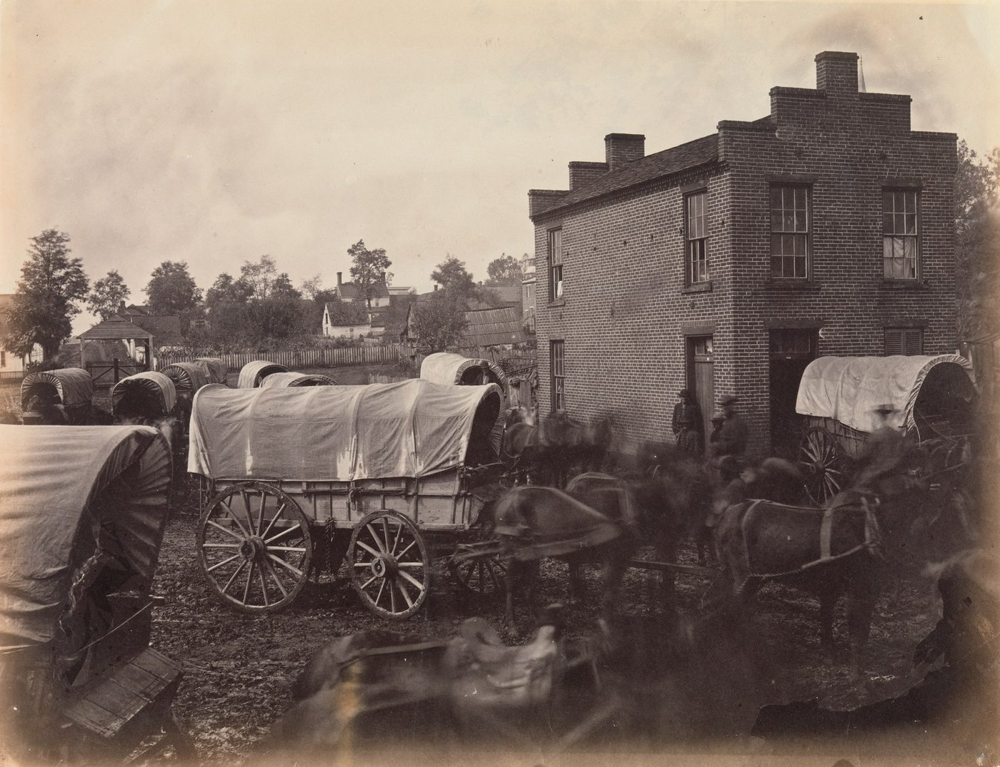

How Clarivo works
Everything happens on your iPhone or iPad. Your photos are processed on your device and never uploaded.
Pick a photo
Choose one or many from Photos or Files, or try a built-in sample.
Choose a tool
Upscale, Unblur, Remove noise, Portrait, Colorize, Restore or Auto fix. A preview appears in seconds.
Compare
Drag the divider, pinch to zoom both sides together, or touch and hold for the original.
Save or share
Pick JPG, PNG or HEIC and a size. The full-resolution result is made, then saved to Photos or Files, or shared.
The tools and their samples
Upscale 2x, 4x or 8x
Choose 2x, 4x or 8x. The AI model works through the photo in small tiles, so even large photos stay smooth, and adds fine texture as it enlarges. 8x runs two passes and stops at 8192 pixels on the long side.
Upscaling predicts plausible texture. It makes a photo larger and cleaner, but it is not the original detail of the scene.
Sample input: A copy of a building photo reduced to 474 × 600 pixels.
Unblur and Sharpen
Unblur reduces mild blur and camera shake with an on-device AI pass plus sharpening. Sharpen is a lighter tool with a strength slider for photos that are only a little soft.
Heavy blur can improve, but detail the camera never captured cannot be brought back.
Sample input: A copy of a street sign photo with sideways camera shake added by us.

Remove noise
Clarivo cleans up grain and colour speckles, then blends the result with the original to the strength you choose, so fur and skin keep their texture.
Sample input: A darker copy of a cat photo with sensor-style noise added by us.
Portrait
Clarivo finds the faces, enhances each one with the upscaling model and blends it back with a soft edge.
It sharpens what is there. It does not generate a new face or change how someone looks.
Sample input: A small, slightly soft 800 px copy of a portrait.

Restore an old photo
Restore reduces scratches and dust, lifts fading and removes the yellow cast of old prints. It is classical image processing, so it never invents content.
Sample input: Street scene, Culpeper, Virginia, March 1864, by Andrew Joseph Russell. A genuinely faded albumen print.

Colorize black and white
The colorize model estimates natural colours for the scene, and Clarivo applies them to the full-resolution original so no sharpness is lost.
Colours are an estimate, not a historical record.
Sample input: Portrait of a man in military regalia, about 1859, by Horatio Ross. A salted paper print with stains and fading.
Sample photos: Pexels photographers (Pexels License); the two historical prints from The Metropolitan Museum of Art (Open Access, CC0). Copies marked as degraded were made by Ecom Swift LLC from sharp originals.